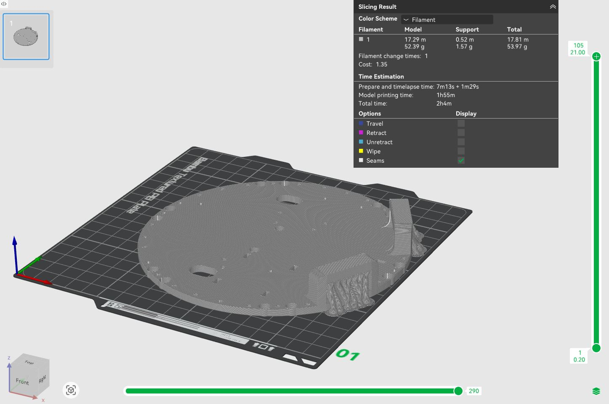
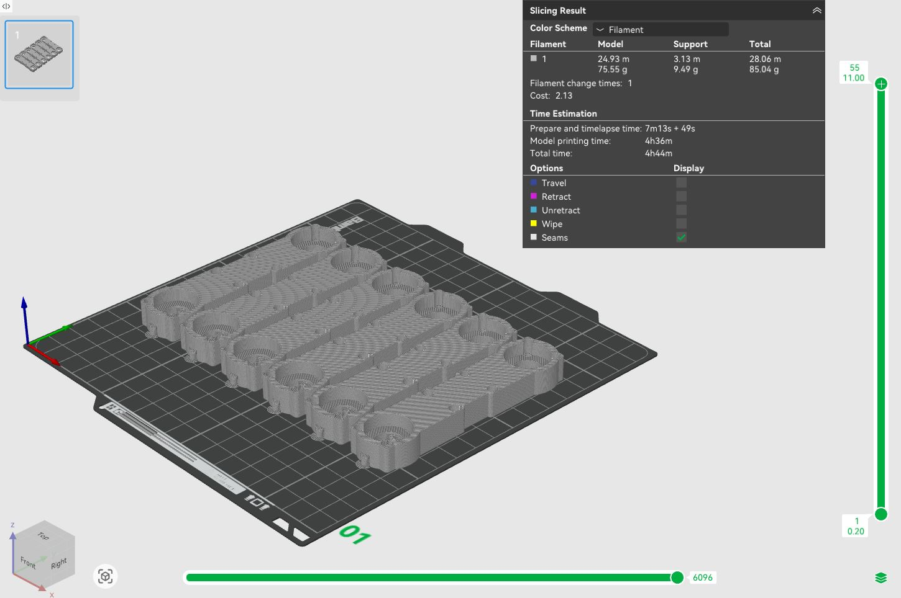
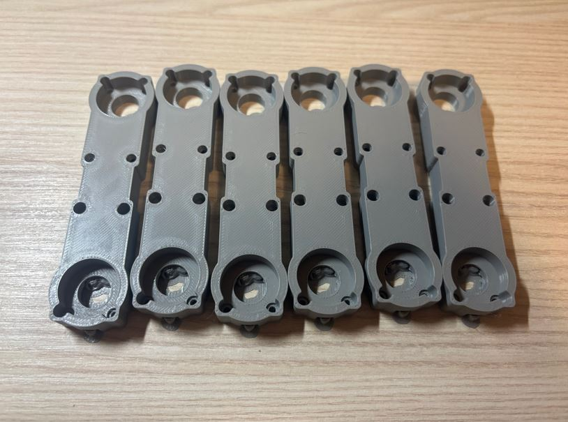
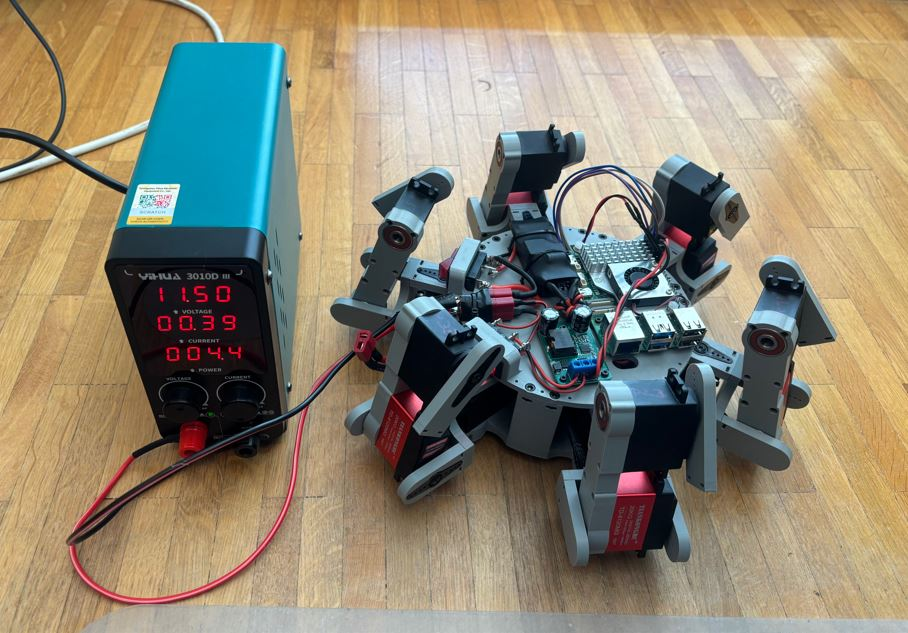

7. týden: Aktuátory a výstupní zařízení Week 7: Actuators and Output Devices
Během sedmého týdne bylo úkolem připojit nějaké výstupní zařízení a změřit jeho spotřebu.
During the seventh week, the task was to connect some output device and measure its power consumption.
Serva a elektronika hexapoda Servos and hexapod electronics
V rámci práce na závěrečném projektu jsem se tento týden zaměřil na zapojení veškeré elektroniky hexapoda a kalibraci servomotorů. Zatímco ve třetím týdnu semestru jsem postavil první patro těla robota, tento týden jsem na něj přimontoval prostřední patro s elektronikou a zprovoznil serva. As part of the work on the final project, I focused this week on wiring all the hexapod electronics and calibrating the servomotors. While in the third week of the semester I built the first level of the robot's body, this week I mounted the middle level with the electronics on it and made the servos operational.
Mozkem robota bude Raspberry Pi 5. Pohyb bude zajišťovat osmnáct servomotorů: dvanáct typu MG996R pro klouby coxa a tibia a šest typu TD-8120MG pro femur. K řízení serv pomocí PWM signálu použiji dva moduly PCA9685. Celý projekt bude napájen z 3S Li-Pol baterie s kapacitou 4200 mAh. The brain of the robot will be a Raspberry Pi 5. Movement will be provided by eighteen servomotors: twelve MG996R type for the coxa and tibia joints and six TD-8120MG type for the femur. To control the servos using a PWM signal, I will use two PCA9685 modules. The entire project will be powered by a 3S Li-Po battery with a capacity of 4200 mAh.
Napájení pro Raspberry Pi a pro aktuátory je odděleno pomocí UBECu a Buck měniče. Obě tyto napájecí větve bude navíc možné nezávisle odpojit pomocí kolébkových přepínačů. Pro základní signalizaci stavu bude hexapod využívat piezobzučák. The power supply for the Raspberry Pi and for the actuators is separated using a UBEC and a Buck converter. Additionally, both of these power branches can be independently disconnected using rocker switches. For basic status signaling, the hexapod will use a piezo buzzer.
Zapojení a elektronika Wiring and electronics
Seznam použitých součástek: List of used components:
- Raspberry Pi 5 - 8 GB RAM Raspberry Pi 5 - 8 GB RAM
- Buck měnič 9-35 V na 5 V / 5 A - DC-DC (dočasné řešení) Buck converter 9-35 V to 5 V / 5 A - DC-DC (temporary solution)
- Sunrise UBEC 20 A Sunrise UBEC 20 A
- Li-Pol baterie 4200 mAh 3S 35C (70C krátkodobě) BH Power Li-Po battery 4200 mAh 3S 35C (70C short-term) BH Power
- 2× Kolébkový přepínač 2pól. / 3pin 20 A / 12 V DC 2× Rocker switch 2-pole / 3-pin 20 A / 12 V DC
- 2× I2C modulový driver PCA9685 2× I2C module driver PCA9685
- 12× servo MG996R (13 kg⋅cm, 180 stupňů) 12× servo MG996R (13 kg⋅cm, 180 degrees)
- 6× servo TD-8120MG (20 kg⋅cm, 180 stupňů) 6× servo TD-8120MG (20 kg⋅cm, 180 degrees)
- Piezobzučák 23 mm SFM-20B 3-24 V / 12 mA Piezo buzzer 23 mm SFM-20B 3-24 V / 12 mA
- T-Dean konektory (male i female) T-Dean connectors (male and female)
- Dupont propojovací kabely Dupont jumper wires
- Oplet na kabely o průměru 8 mm Cable braiding with 8 mm diameter
- Stahovací pásky 150 × 2,5 mm Zip ties 150 × 2.5 mm
- Sada smršťovacích bužírek Set of heat shrink tubing
- Sada M2-M4 šroubků a matic Set of M2-M4 screws and nuts
- 18× kuličkové ložisko 6 × 19 × 6 mm 18× ball bearing 6 × 19 × 6 mm
Schéma zapojení jsem navrhl v programu KiCAD. Symboly pro součástky jako Raspberry Pi (knihovna MCU_Module nebo Connector), kolébkový přepínač (SW_SPST) a baterie (Battery) jsou již součástí základních knihoven programu. Symboly pro specifičtější moduly lze stáhnout z internetu, případně je ve schématu nahradit standardními kolíkovými lištami (např. Conn_01x03_Socket pro serva).
I designed the wiring diagram in the KiCAD program. Symbols for components like the Raspberry Pi (library MCU_Module or Connector), rocker switch (SW_SPST), and battery (Battery) are already included in the program's basic libraries. Symbols for more specific modules can be downloaded from the internet, or replaced in the schematic with standard pin headers (e.g., Conn_01x03_Socket for servos).

Montážní deska Mounting plate
Většina elektroniky je umístěna v prostředním patře těla hexapoda. Bylo tedy nezbytné navrhnout montážní desku, ke které jednotlivé moduly buď přišroubuji, nebo zafixuji pomocí stahovacích pásek. Desku jsem modeloval v programu Fusion 360. Most of the electronics are located on the middle level of the hexapod's body. It was therefore necessary to design a mounting plate to which I would either screw the individual modules or fix them using zip ties. I modeled the plate in the Fusion 360 program.
Raspberry Pi, jeho měnič napětí a bzučák se k desce uchycují pomocí šroubů M2 (v desce jsou pro ně připraveny otvory o průměru 2 mm). Měnič napětí pro serva a rozdvojovací konektor baterie jsou fixovány stahovacími páskami provlečenými otvory o rozměrech 5 × 2 mm. V desce jsem také vytvořil otvory pro protažení kabelů od Raspberry Pi a baterie do spodního patra k modulům PCA9685. Kolébkové přepínače se vtlačí do výřezů o rozměrech 27 × 12 mm. Obě patra těla jsou nakonec spojena pomocí šroubů M3 × 8 mm a matek zapuštěných do tištěných dílů. The Raspberry Pi, its voltage converter, and the buzzer are attached to the board using M2 screws (there are 2 mm diameter holes prepared for them in the plate). The voltage converter for the servos and the battery splitter connector are fixed with zip ties threaded through 5 × 2 mm holes. I also created holes in the plate to route the cables from the Raspberry Pi and the battery to the bottom level to the PCA9685 modules. The rocker switches are pressed into cutouts measuring 27 × 12 mm. Both body levels are finally connected using M3 × 8 mm screws and nuts embedded into the printed parts.

Hotový model jsem vyexportoval z Fusionu (přes Utilities -> 3D print) do formátu 3MF a naslicoval v programu Bambu Studio. Jako materiál jsem zvolil PLA a tiskl jsem na tiskárně Bambu Lab A1 Mini s 0,4 mm tryskou při následujícím nastavení: I exported the finished model from Fusion (via Utilities -> 3D print) into the 3MF format and sliced it in the Bambu Studio program. I chose PLA as the material and printed on the Bambu Lab A1 Mini printer with a 0.4 mm nozzle using the following settings:
- Profil: 0,20 mm Standard @BBL A1M Profile: 0.20 mm Standard @BBL A1M
- Nozzle temperature (teplota trysky): 210 °C Nozzle temperature: 210 °C
- Bed temperature (teplota podložky): 65 °C Bed temperature: 65 °C
- Wall loops (perimetry): 4 Wall loops: 4
- Sparse infill density (hustota výplně): 20 % Sparse infill density: 20 %
- Sparse infill pattern (vzor výplně): Gyroid Sparse infill pattern: Gyroid
- Outer wall speed (rychlost vnější stěny): 60 mm/s Outer wall speed: 60 mm/s
Zbylá nastavení zůstala na výchozích hodnotách tiskového profilu. Pro správné vytištění otvoru na kolébkový spínač bylo nutné vygenerovat podpěry. Zvolil jsem tyto parametry: The remaining settings were kept at the default values of the print profile. To correctly print the hole for the rocker switch, it was necessary to generate supports. I chose these parameters:
- Type (typ): Tree (auto) Type: Tree (auto)
- Top Z distance (mezera v ose Z): 0,2 mm Top Z distance: 0.2 mm


Abych mohl napájení rozdělit na dvě zmíněné větve, musel jsem spájet vlastní rozdvojovací konektor: In order to split the power supply into the two mentioned branches, I had to solder my own splitter connector:


Jednotlivé moduly jsem pak připevnil k desce a vše propojil a spájel podle dříve vytvořeného schématu. I then attached the individual modules to the plate, connected everything, and soldered it according to the previously created schematic.


Kalibrace servomotorů Servomotor calibration
Protože budu serva řídit pomocí PWM signálu o frekvenci 50 Hz z modulů PCA9685, musel jsem nejdříve zjistit, jaká šířka pulzu odpovídá jakému úhlu. V ideálním světě by stačilo změřit krajní hodnoty pro 0 a 180 stupňů a zbytek dopočítat. V praxi ale převodní charakteristika serv není dokonalá přímka, takže by tento přístup přinesl velké nepřesnosti. Because I will control the servos using a 50 Hz PWM signal from the PCA9685 modules, I first had to find out what pulse width corresponds to what angle. In an ideal world, it would be enough to measure the extreme values for 0 and 180 degrees and calculate the rest. In practice, however, the transfer characteristic of the servos is not a perfect line, so this approach would introduce major inaccuracies.
Zvolil jsem proto přesnější metodu. Rozsah serva (0 až 180 stupňů) jsem rozdělil na čtyři segmenty po 45 stupních. U každého z pěti kalibračních bodů jsem změřil délku pulzu a jednotlivé segmenty jsem následně nahradil přímkami. Výsledek je aproximace převodní charakteristiky v rozsahu 0 až 180 stupňů pomocí čtyř úseček. Tento proces jsem musel provést pro všech 18 motorů, protože každý kus má mírně odlišnou charakteristiku. Therefore, I chose a more accurate method. I divided the servo range (0 to 180 degrees) into four 45-degree segments. At each of the five calibration points, I measured the pulse length and subsequently replaced the individual segments with line segments. The result is an approximation of the transfer characteristic in the range of 0 to 180 degrees using four line segments. I had to perform this process for all 18 motors because each piece has slightly different characteristics.
Pro usnadnění kalibrace jsem si vytiskl jednoduchý nástroj. Jeho první díl se nasadí na tělo serva a zafixuje v otvorech pro šrouby, druhý díl se přichytí k hřídeli. To make calibration easier, I printed a simple tool. Its first part fits onto the servo body and is fixed in the screw holes; the second part attaches to the shaft.


K samotnému měření používám následující kód. Využívá knihovnu wiringPiI2C pro komunikaci s PCA9685 přes sběrnici I2C. Program umožňuje ručně upravovat šířku PWM pulzu stiskem kláves + a -, případně přímým zadáním číselné hodnoty. Naměřené hodnoty si průběžně zapisuji do tabulky.
I use the following code for the actual measurement. It utilizes the wiringPiI2C library for communication with the PCA9685 over the I2C bus. The program allows manually adjusting the PWM pulse width by pressing the + and - keys, or by directly entering a numerical value. I continuously record the measured values into a table.
#define _DEFAULT_SOURCE
#include <unistd.h>
#include <stdio.h>
#include <wiringPiI2C.h>
#define PCA9685_ADDR 0x41 // i2c adresa modulu
#define MODE1 0x00
#define PRESCALE 0xFE // registr pro frekvenci
#define LED0_ON_L 0x06
#define CHANNEL 3
void pca9685_set_pwm(int fd, int channel, int on, int off); // ovladani serva
void pca9685_init(int fd); // zakladni nastaveni modulu
int main() {
int fd = wiringPiI2CSetup(PCA9685_ADDR); // inicializace i2c
if (fd < 0) {
printf("ERROR: Failed to open I2C.\n");
return 1;
}
pca9685_init(fd);
int pwm = 0;
char ch;
while (1) {
ch = getchar();
if (ch == '+') {
pwm++;
printf("PWM: %d\n", pwm);
} else if (ch == '-') {
pwm--;
printf("PWM: %d\n", pwm);
} else if (ch >= '0' && ch <= '9') {
ungetc(ch, stdin); // vrati znak pro nacteni celeho cisla
scanf("%d", &pwm);
printf("PWM: %d\n", pwm);
}
pca9685_set_pwm(fd, CHANNEL, 0, pwm); // vypsani hodnoty
usleep(100000);
}
return 0;
}
void pca9685_set_pwm(int fd, int channel, int on, int off) {
int reg = LED0_ON_L + 4 * channel; // vyber registr
wiringPiI2CWriteReg8(fd, reg, on & 0xFF); // start pulzu (dolni bajt)
wiringPiI2CWriteReg8(fd, reg + 1, on >> 8); // start pulzu (horni bajt)
wiringPiI2CWriteReg8(fd, reg + 2, off & 0xFF); // konec pulzu (dolni bajt)
wiringPiI2CWriteReg8(fd, reg + 3, off >> 8); // konec pulzu (horni bajt)
}
void pca9685_init(int fd) {
wiringPiI2CWriteReg8(fd, MODE1, 0x10); // spanek pro zmenu frekvence
wiringPiI2CWriteReg8(fd, PRESCALE, 121); // nastaveni na 50 Hz
wiringPiI2CWriteReg8(fd, MODE1, 0x00); // probuzeni
usleep(1000);
wiringPiI2CWriteReg8(fd, MODE1, 0xA1); // auto-increment registru
}
Tabulka naměřených hodnot pak vypadá takto: The table of measured values then looks like this:
// PWM values for 0, 45, 90, 135, 180 deg
static const float servo_calibration[NUM_OF_LEGS][JOINTS_PER_LEG][CAL_POINTS] = {
// Leg 0 - L1
{
{119.f, 208.f, 307.f, 403.f, 504.f}, // L11
{114.f, 212.f, 315.f, 420.f, 521.f}, // L12
{109.f, 205.f, 308.f, 406.f, 501.f} // L13
},
// Leg 1 - L2
{
{115.f, 210.f, 311.f, 411.f, 508.f}, // L21
{104.f, 206.f, 313.f, 417.f, 514.f}, // L22
{112.f, 206.f, 310.f, 414.f, 510.f} // L23
},
// Leg 2 - L3
{
{110.f, 205.f, 310.f, 415.f, 511.f}, // L31
{104.f, 206.f, 315.f, 418.f, 515.f}, // L32
{ 98.f, 191.f, 293.f, 397.f, 493.f} // L33
},
// Leg 3 - P3
{
{109.f, 201.f, 299.f, 395.f, 490.f}, // P31
{ 96.f, 196.f, 298.f, 400.f, 496.f}, // P32
{104.f, 197.f, 293.f, 390.f, 490.f} // P33
},
// Leg 4 - P2
{
{106.f, 200.f, 300.f, 398.f, 494.f}, // P21
{111.f, 211.f, 310.f, 412.f, 508.f}, // P22
{102.f, 195.f, 295.f, 394.f, 489.f} // P23
},
// Leg 5 - P1
{
{111.f, 203.f, 300.f, 399.f, 494.f}, // P11
{100.f, 200.f, 301.f, 402.f, 500.f}, // P12
{118.f, 207.f, 307.f, 403.f, 502.f} // P13
}
};
Femur Femur
Abych mohl zkalibrovaná serva upevnit k tělu, musel jsem vytvořit prostřední článek nohou - femur. Hmotnost robota by neměla ležet pouze na hřídelích servomotorů, proto jsem na jejich spodní stranu umístil opěrné kuličkové ložisko, které převezme část mechanické zátěže. To be able to attach the calibrated servos to the body, I had to create the middle leg segment - the femur. The robot's weight shouldn't rest solely on the servomotor shafts, so I placed a support ball bearing on their bottom side, which will take on part of the mechanical load.
Pro úsporu místa a lepší uchycení jsem ze serv odstranil původní spodní plastový kryt. Místo něj jsem navrhl kryt nový, který již obsahuje lůžko pro ložisko a je navíc přímo integrován do samotného dílu femuru. Servo je k femuru připevněno původními dlouhými šrouby, které dříve držely odmontovaný kryt. Aby se při pohybu drátky nepoškodily, jsou vedeny vnitřkem femuru a následně skryty v kabelovém opletu, který ústí do těla robota. To save space and improve mounting, I removed the original bottom plastic cover from the servos. Instead, I designed a new cover that already contains a seat for the bearing and is directly integrated into the femur part itself. The servo is attached to the femur using the original long screws that previously held the removed cover. To prevent damage to the wires during movement, they are routed through the inside of the femur and then hidden in a cable braid that leads into the robot's body.


Femur jsem tiskl se stejným nastavením jako desku pro elektroniku. I printed the femur with the same settings as the electronics board.




Kód na ovládání serv Code for controlling servos
Následující kód je ukázkou toho, jak lze po kalibraci ovládat serva zadáním úhlu: The following code is an example of how servos can be controlled by entering an angle after calibration:
#define _DEFAULT_SOURCE
#include <unistd.h>
#include <stdio.h>
#include <math.h>
#include <wiringPiI2C.h>
#define PCA9685_ADDR 0x40
#define CHANNEL 0
// pole pro aproximaci
static const float CAL_PWM[5] = {114.f, 212.f, 315.f, 420.f, 521.f};
static const float CAL_ANGLES[5] = {0.f, 45.f, 90.f, 135.f, 180.f};
// init pca9685 na 50hz
void pca9685_init(int fd) {
wiringPiI2CWriteReg8(fd, 0x01, 0x04); // rezim 2
wiringPiI2CWriteReg8(fd, 0x00, 0x10); // uspat pro nastaveni
wiringPiI2CWriteReg8(fd, 0xFE, 121); // prescale 50hz
wiringPiI2CWriteReg8(fd, 0x00, 0x21); // probudit
usleep(1000);
wiringPiI2CWriteReg8(fd, 0x00, 0xA1); // restart
}
// zapis pwm na kanal
void pca9685_set_pwm(int fd, int channel, int pwm) {
int base = 0x06 + 4 * channel; // zakladni registr
wiringPiI2CWriteReg8(fd, base + 0, 0);
wiringPiI2CWriteReg8(fd, base + 1, 0);
wiringPiI2CWriteReg8(fd, base + 2, pwm & 0xFF);
wiringPiI2CWriteReg8(fd, base + 3, (pwm >> 8) & 0x0F);
}
// prepocet uhlu pomoci 5 segmentu
int angle_to_pwm(float angle) {
if (angle <= CAL_ANGLES[0]) return (int)roundf(CAL_PWM[0]);
if (angle >= CAL_ANGLES[4]) return (int)roundf(CAL_PWM[4]);
// nalezni spravny segment
int i = (int)(angle / 45.0f);
if (i > 3) i = 3;
// linearni interpolace v segmentu
float t = (angle - CAL_ANGLES[i]) / 45.0f;
float pwm = CAL_PWM[i] + t * (CAL_PWM[i+1] - CAL_PWM[i]);
return (int)roundf(pwm);
}
int main() {
int fd = wiringPiI2CSetup(PCA9685_ADDR);
if (fd < 0) {
printf("ERROR: Nelze otevřít I2C sběrnici.\n");
return 1;
}
pca9685_init(fd);
float angle;
printf("Zadejte úhel (0 - 180):\n");
// vstup
while (scanf("%f", &angle) == 1) {
// orezani uhlu
if (angle < 0) angle = 0;
if (angle > 180) angle = 180;
// prepocet na pwm pomoci interpolace
int pwm = angle_to_pwm(angle);
pca9685_set_pwm(fd, CHANNEL, pwm);
printf("Uhel: %.2f -> PWM: %d\n", angle, pwm);
}
return 0;
}
Měření spotřeby hexapoda Hexapod power consumption measurement
K měření spotřeby hexapoda jsem použil čínský laboratorní zdroj napětí YIHUA 3010D-III (30 V / 10 A). Když jsem odpojil napájení pro serva, naměřil jsem odběr 0,39 A při napětí 11,5 V. Přes elektrický výkon si tedy můžeme spočítat, že do napájecí větve pro Raspberry Pi 5 teče při minimální zátěži zhruba 0,9 A při 5 V. Při současném pohybu všech serv vyskočil maximální naměřený proud na 2,5 A při 12 V. Z toho vyplývá, že do napájecí větve serv teče zhruba 4 A při 6 V. To measure the hexapod's power consumption, I used a Chinese laboratory power supply YIHUA 3010D-III (30 V / 10 A). When I disconnected the power supply for the servos, I measured a draw of 0.39 A at 11.5 V. By calculating the electrical power, we can determine that the power branch for the Raspberry Pi 5 draws roughly 0.9 A at 5 V under minimal load. During simultaneous movement of all servos, the maximum measured current jumped to 2.5 A at 12 V. This means that roughly 4 A at 6 V flows into the servo power branch.
Ačkoliv se tyto hodnoty pravděpodobně blíží realitě, je důležité zmínit, že zachycují pouze průměrný odběr. Serva totiž neodebírají proud konstantně, ale v pulzech. Displej zdroje tyto špičky nedokáže zaznamenat a ukazuje pouze vyhlazenou průměrnou hodnotu. Although these values are likely close to reality, it is important to mention that they capture only the average draw. Servos do not draw current constantly, but rather in pulses. The power supply display cannot capture these peaks and only shows a smoothed average value.
